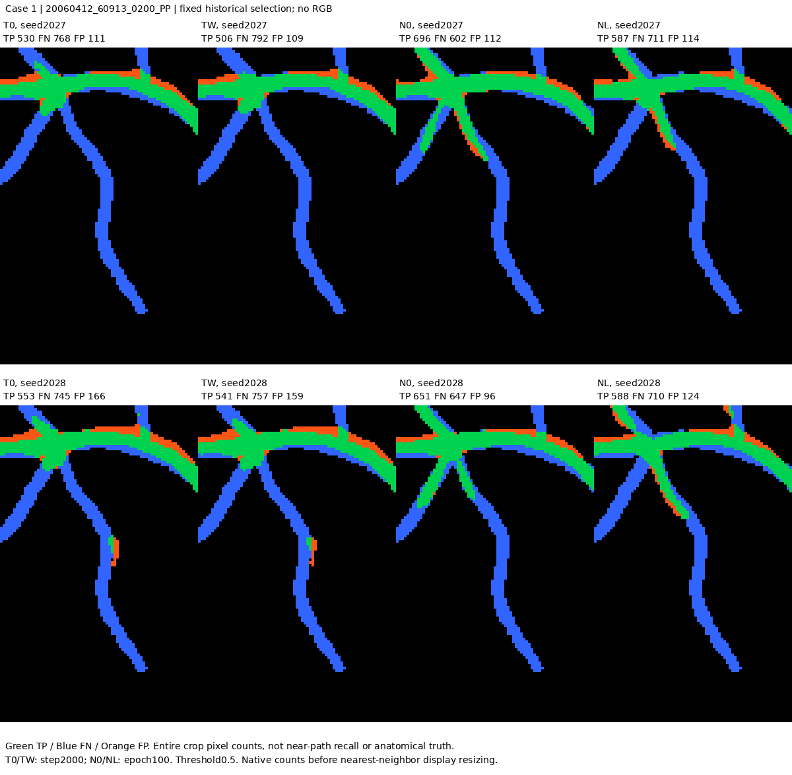
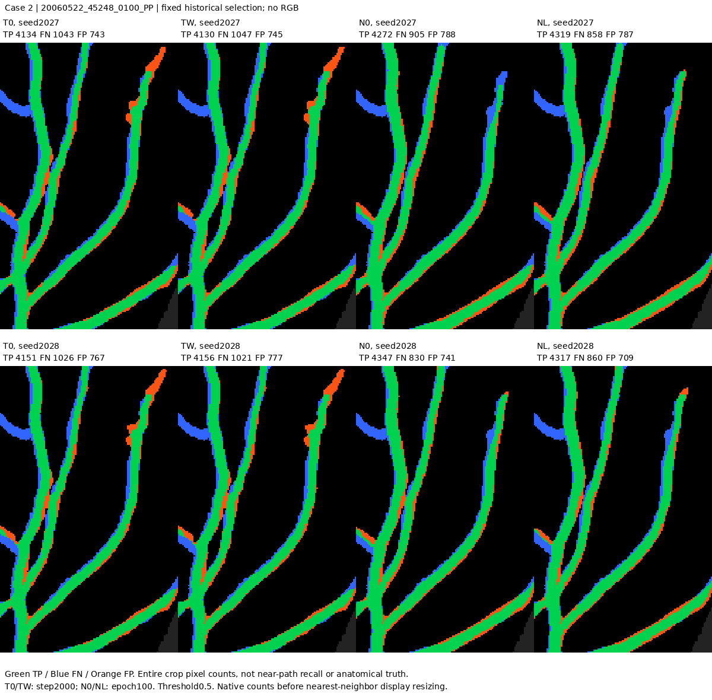
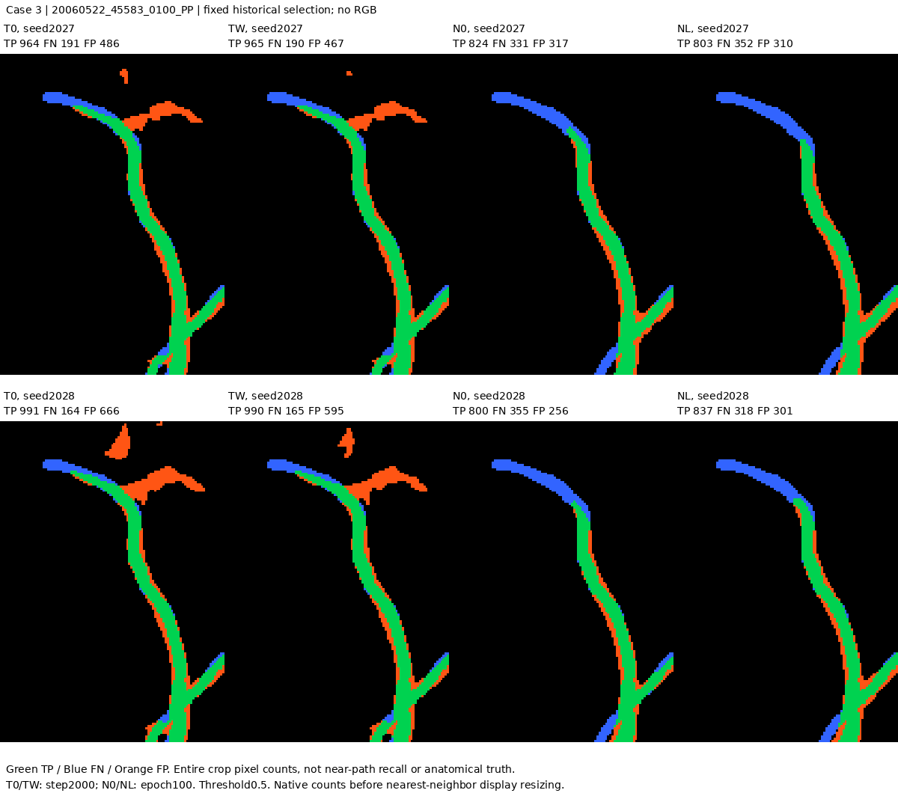
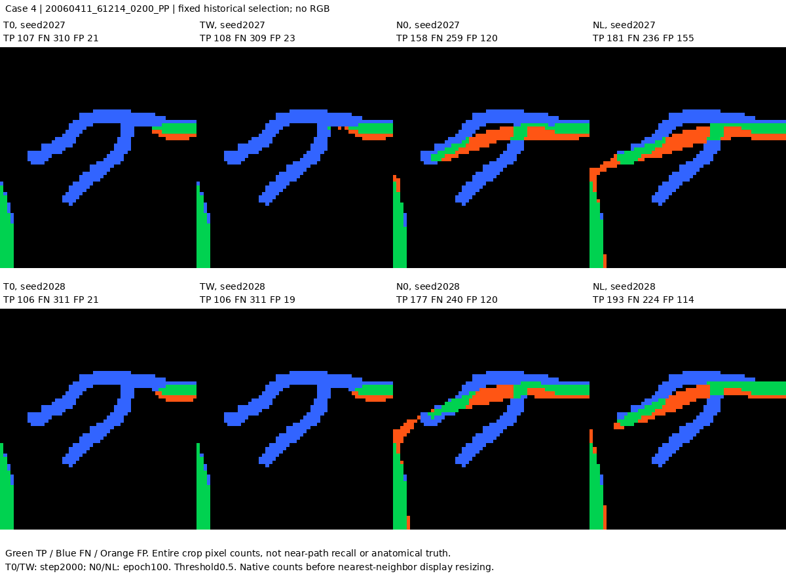
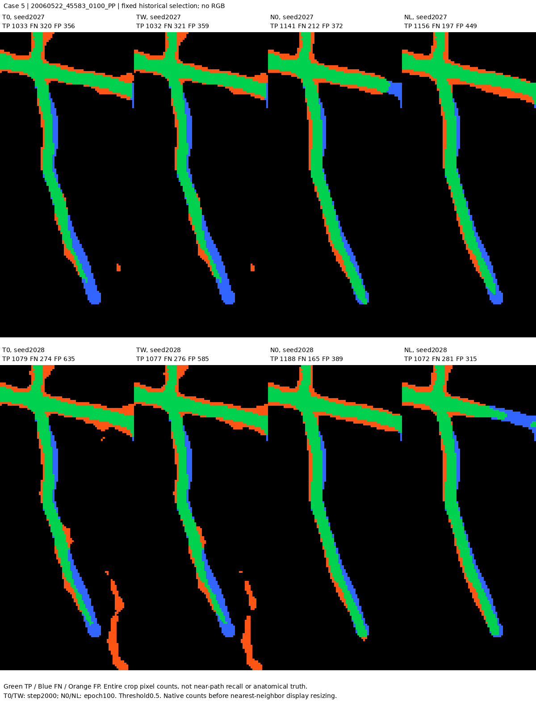
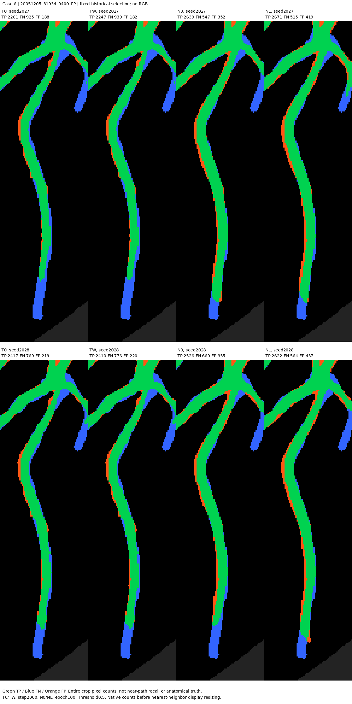

原6例评价覆盖对照
两个seed；无RGB；固定原案例，不能代表全部Dev。绿TP、蓝FN、橙FP；像素计数不等于骨架召回。
案例1：20060412_60913_0200_PP；原选择原因 single_target_image；裁剪yx=[381, 815, 501, 890]

案例2：20060522_45248_0100_PP；原选择原因 single_target_image；裁剪yx=[846, 1622, 1049, 1748]

案例3：20060522_45583_0100_PP；原选择原因 lowest_nonzero_candidate_coverage_in_size；裁剪yx=[783, 1581, 933, 1686]

案例4：20060411_61214_0200_PP；原选择原因 lowest_nonzero_candidate_coverage_in_size；裁剪yx=[819, 489, 883, 546]

案例5：20060522_45583_0100_PP；原选择原因 largest_near_candidate_with_zero_S3；裁剪yx=[559, 1562, 716, 1631]

案例6：20051205_31934_0400_PP；原选择原因 size_without_nonzero_S3_largest_near_candidate；裁剪yx=[1102, 1569, 1368, 1642]
